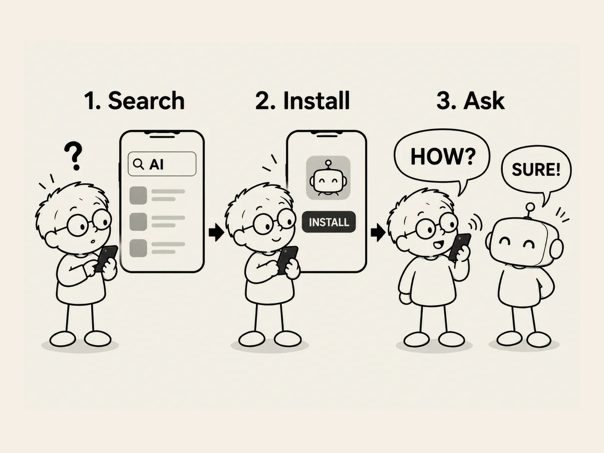

7.
Eine Einladung an die KI. Suchen. Installieren. Fragen.
Eines Tages fragte mich jemand:
„Wie benutzt man eigentlich KI?
Ich habe mir ein paar YouTube-Videos angeschaut,
aber das sah kompliziert aus.“
Meine Antwort war einfach.
„Du musst nur drei Dinge tun.“
Suchen.
Installieren.
Fragen.
Im App Store auf dem Handy nach KI suchen.
Die KI installieren,
die du möchtest.
Und dann eine Frage stellen.
Wenn ich mich richtig erinnere,
habe ich so angefangen.
„Hallo.
Was kannst du?“
Wenn jemand KI zum ersten Mal benutzt,
würde ich empfehlen,
es mit Voice zu versuchen.
Es fühlt sich viel näher an als Tippen.
Man kann einfach mit ihr reden,
wie mit einem Freund.
„Ich bin heute ein bisschen traurig.
Was soll ich tun?“
„Ich möchte gerade Musik hören.
Empfiehl mir etwas Jazz.“
Mehr muss man eigentlich nicht tun.
Ich sagte zu dieser Person:
„Such nicht auf YouTube nach Anleitungen,
wie man KI benutzt.
Frag einfach die KI.“
„Aber wie soll ich KI benutzen?“
Das kann man die KI auch fragen.
